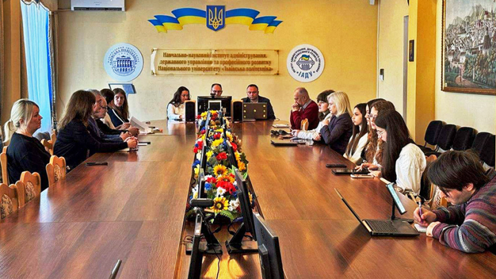
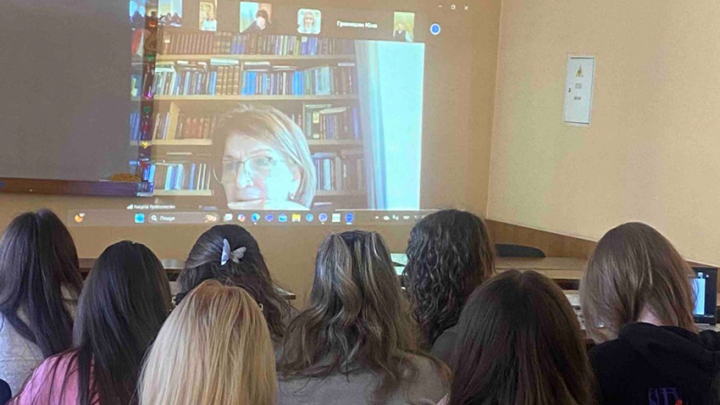
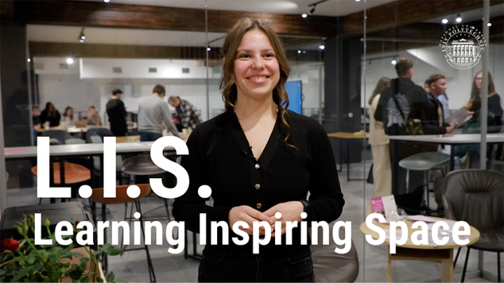

Новини університету

9 квіт. 2025, 17:01
Львівська політехніка – один із лідерів у рейтингу ефективності участі ЗВО України в конкурсах наукових проєктів у 2024 році

9 квіт. 2025, 15:13
Відбулась Міжнародна конференція «Європейська інтеграція та трансформація публічного врядування в Україні»

9 квіт. 2025, 12:28
Кафедра ТПК провела П’яту Міжнародну конференцію «Незалежність України: права людини та національна безпека»

9 квіт. 2025, 09:51
Студентський простір «L.I.S.» – новий рівень можливостей у Львівській політехніці